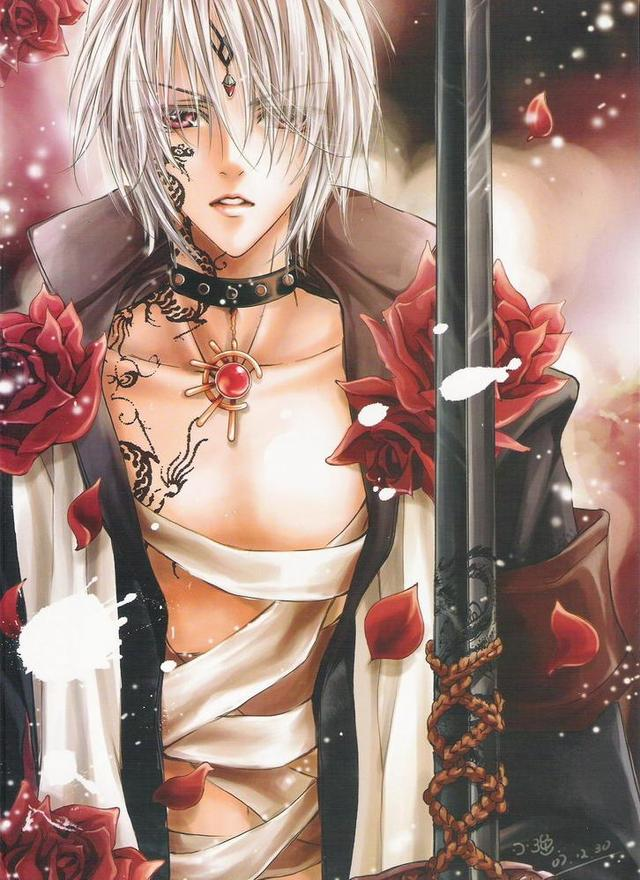

Alternative Names: Half Prince, 1|2 PrinceAuthor(s): Yu We & Choi Hong Chong
Genres: Action, Adventure, Comedy, Fantasy,
Gender Bender, Romance, Sci-fi, Shoujo, Shounen
Release: 2004
Status: Current
Type: Manga
Length: 11 Volumes 57 Chapters
Read Online @:


More info @:

Notes
In the future year 2100AD the gaming universe has evolved into virtual reality games. Feng Lan and her brother try a new game "Second Life" and find out that they are the first players to log in! As a reward they get to decide whether their online character will be 30% more beautiful or ugly, hmmm..... Well Feng Lan decideds she wants beauty and that she wants to be a guy!!! But Second Life has a rule that you cannot change your gender for the game, the admin asks the higher ups in the game and allows Feng Lan the privilage!! What mayhem will she get into I suppose?!?! P.S. the above picture is her character, Prince the Blood Elf